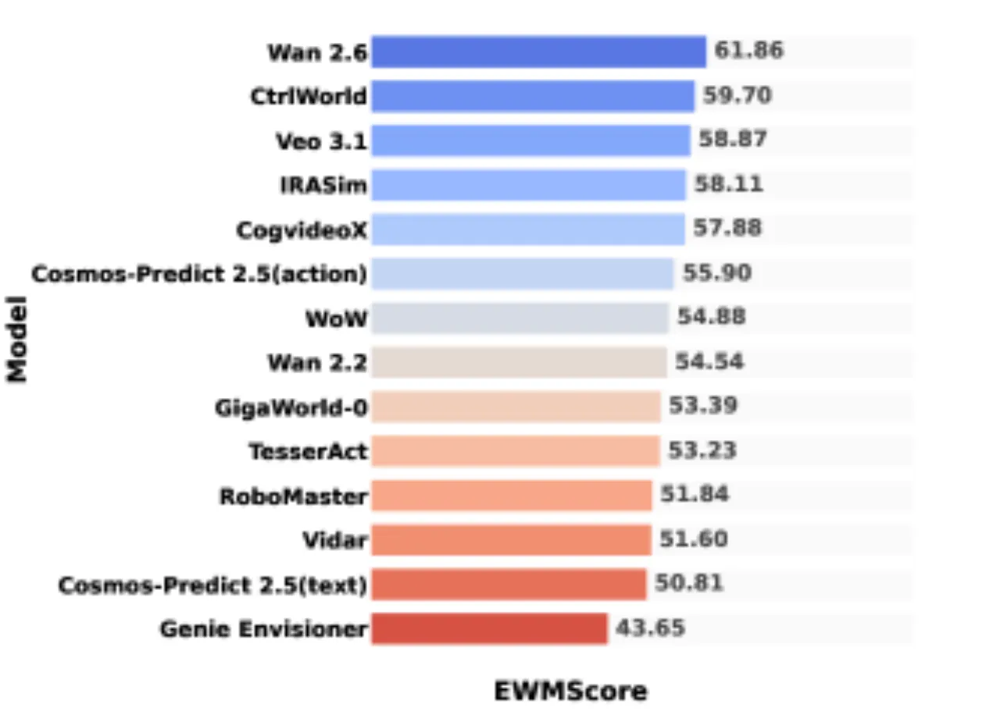
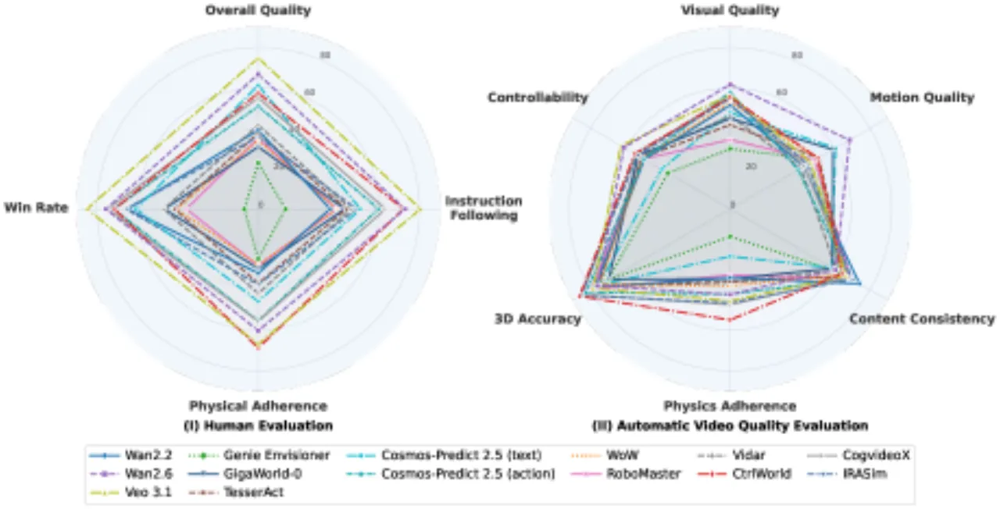
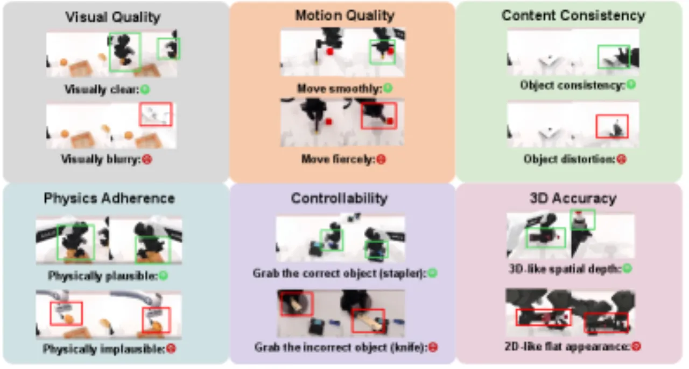
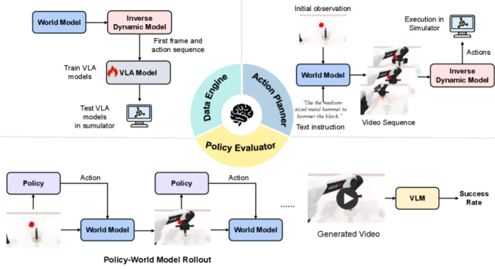
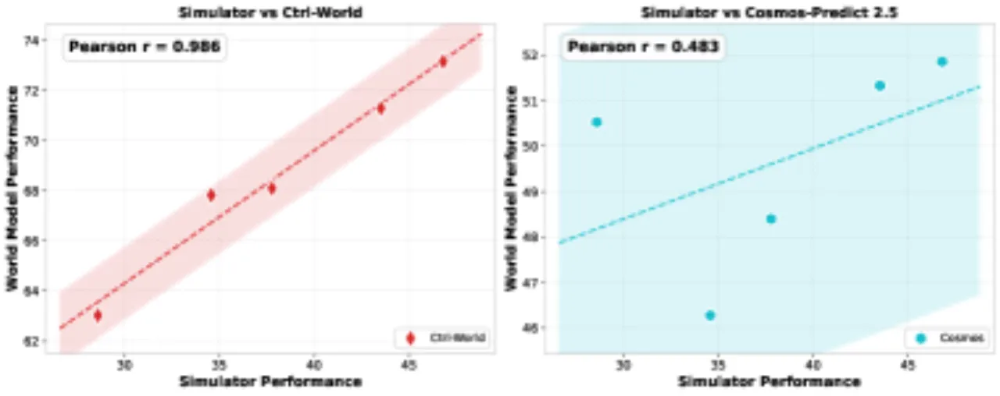
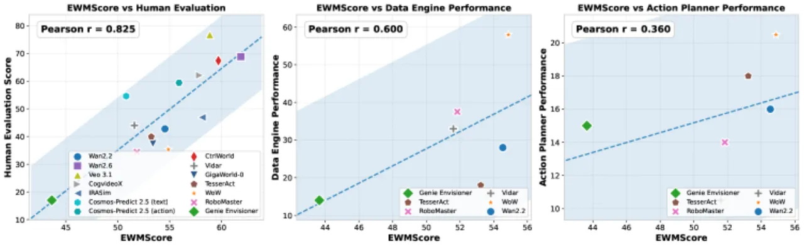

当前具身世界模型（Embodied World Models, EWMs）的评测高度碎片化——主流工作仅关注视频生成质量，却忽视模型在真实具身任务中的实用价值。WorldArena 构建了首个统一评测体系：16 项视频质量指标 + 3 类具身任务评测 + 人工标注，并提出综合评分 EWMScore。对 14 个代表性模型的系统评测揭示了"视觉质量领先≠任务能力领先"的关键鸿沟。
现有具身世界模型评测存在三大核心问题：只关注视频生成质量（perceptual fidelity），忽略功能性（functional utility）；单次评测覆盖模型数量少（通常不超过 10 个）；缺乏统一框架将感知质量与下游任务效果关联起来。
"Current evaluation of embodied world models has largely focused on perceptual fidelity (e.g., video generation quality), overlooking the functional utility of these models in downstream decision-making tasks."


WorldArena 构建三维统一评测体系：(1) 视频质量评测（16 项自动化指标，覆盖 6 个维度）；(2) 具身任务评测（数据引擎、策略评估器、动作规划器）；(3) 人工评测。最终通过 EWMScore 将多维结果汇聚为单一可解释指标。


将 16 项视频质量指标综合为单一可解释指数：(1) 基于经验定义的边界值线性归一化至 [0,1]；(2) 缩放至 [0,100]；(3) 跨所有归一化指标的算术均值。通过与人工评测、具身任务性能的相关性验证其有效性。
评测数据集为 RoboTwin 2.0，共 2,500 个视频（2,000 训练 / 500 测试），覆盖 50 个双臂机器人操作场景。评测 14 个模型，涵盖通用视频模型与具身专用模型两大类别。
| 模型 | 类别 | 突出指标 |
|---|---|---|
| Wan 2.6 / Veo 3.1 | 通用视频 | Image Quality 0.68、Aesthetic Quality 0.46+（最高视觉质量） |
| CtrlWorld | 动作条件具身 | 3D 精度最佳（Depth 0.4766）、Subject Consistency 0.9185 |
| CogvideoX / IRASim | 混合 | JEPA Similarity 0.93+（内容一致性优秀） |
| WoW | 文本条件具身 | Action Following 0.0434（最佳动作跟随性） |
合成数据训练下游策略的成功率仅为 1–45%，而真实数据训练的成功率为 66–77%。仅 RoboMaster 和 WoW 在部分任务上超越了真实数据基线。论文指出："current embodied world models are not yet reliable data sources"。动作规划器任务成功率同样处于 1–45% 范围，表明"world models capture useful predictive structure"，但"struggle to reliably support closed-loop task execution"。


| EWMScore 相关性对象 | 相关系数 r | 解读 |
|---|---|---|
| 人工评测（Human Evaluation） | 0.825 | 强相关，EWMScore 可有效代理人工判断 |
| 数据合成任务（Data Engine） | 0.600 | 中等相关，感知质量部分迁移到合成数据效果 |
| 动作规划任务（Action Planner） | 0.360 | 弱相关，视觉质量与规划能力差距显著 |
视觉质量最高的 Veo 3.1、Wan 2.6 等通用模型并未在具身任务中取得对应的领先优势。动作条件具身专用模型（如 CtrlWorld）尽管感知评分较低，却在策略评估和物理合理性方面表现更优。通用视频模型展现强视觉保真度，但存在"semantic drift"；具身专用模型生成的动作序列"more coherent and goal-consistent"；动作条件方法更好地捕捉交互动力学。
当前 WorldArena 全部实验限于 bimanual robotic manipulation 领域。作者承诺将来扩展至更多具身智能场景（导航、移动操作等），但目前结论的泛化性有限。
测试数据集仅包含 2,500 个视频，覆盖单一仿真器（RoboTwin 2.0）的 50 个任务场景。人工标注由 70 位标注员完成 3,500 个视频的评测，样本量处于"solid but potentially limited"水平。
实验显示绝大多数世界模型生成的合成数据训练效果（成功率 1–45%）远低于真实数据（66–77%），当前 EWMs 尚不能作为可靠的数据合成引擎。
通过世界模型评估策略时，部分模型（如 Cosmos-Predict 2.5）与真实仿真器相关性较弱，说明以世界模型替代真实环境评估存在系统性偏差，可能高估策略的真实成功率。
当前世界模型在闭环长时序任务执行中表现受限。作为动作规划器时，任务成功率偏低，说明从短视频生成到多步骤动作序列规划仍有显著差距。